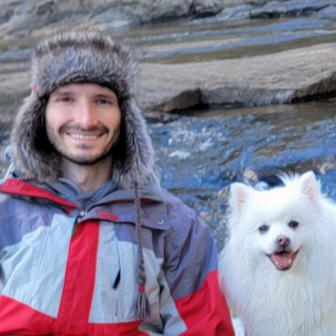

Spencer Williams
Hello! 👋 I'm a hardware engineer interested in AI/CPU architecture, design, and automation. I enjoy working collaboratively to build complex systems delivering real-world impact! My hobbies include building apps, exploring ML/AI, 3D modeling, and managing personal finances using Python. I also enjoy traveling, trying new food, and playing ice hockey.

Projects
-
Microsoft Maia AI Accelerator (Work)
Developing hardware to perform linear algebra and floating point math operations to run AI workloads.
Maia 200 Tech Blog · Maia 100 Azure · Maia 100 Hotchips -
Floating Point Number Converter
Helpful tool for representing and converting between floating point number formats.
GitHub.io · GitHub -
Coin Collection Android App
Android app helping coin collectors manage and track their collections with an intuitive interface and comprehensive database. The app has over 2.5k reviews and over 500k downloads on Google Play.
GitHub · Google Play -
Life Model Python Package
Agent-based simulation package for modeling life events and their financial impacts. Essential tool for comprehensive financial planning and scenario analysis.
GitHub · PyPI -
Qualcomm Centriq Server CPU (Work)
Developed instruction fetch and exception model logic for the Falkor CPU.
Qualcomm Article · Hotchips 2017 -
Qualcomm Krait/Kryo Mobile CPUs (Work)
Contributed to the design and verification of the Krait and Kryo Mobile CPUs.
Kryo Article · Mars Rover
Activities
- Apr 2026 Cognitive Silicon Design Workshop @ Meta · Sunnyvale, CA
- Dec 2025 Google DeepMind Hackathon · Vibe Code with Gemini 3 Pro in AI Studio
- Oct 2025 Hacktoberfest · Two Open-Source Contributions
- Sep 2025 Microsoft Hackathon · Hardware Design MCP Server + SLM Training w/ ART
- Oct 2023 Hacktoberfest · Four Open-Source Contributions
- Sep 2023 Microsoft Hackathon · Hardware Transpose Modeling in Python
- Oct 2022 Hacktoberfest · Four Open-Source Contributions
- Sep 2022 Microsoft Hackathon · ABC Boolean Logic Synthesis Study
- Oct 2021 Hacktoberfest · Four Open-Source Contributions
- Oct 2021 Microsoft Hackathon · Machine Learning Regression Test Recommender
- Oct 2020 Hacktoberfest · Four Open-Source Contributions
- Jul 2020 Microsoft Hackathon · Added SystemVerilog Syntax Highlighting to Azure DevOps
- Nov 2018 Technica Hackathon · Mentor rep. Microsoft (University of Maryland)
- Nov 2017 Technica Hackathon · Mentor rep. Qualcomm (University of Maryland)
- Sep 2016 Patent Application · Precise invalidation of virtually tagged caches (Qualcomm)
- Jun 2016 Qualcomm HackMobile · Presenter and Mentor
- Apr 2016 Pearl Hacks · Workshop Lead and Mentor rep. Qualcomm (University of North Carolina)
- Feb 2015 International Development Hack (IDHack) · Presenter and Mentor rep. Qualcomm (Tufts University)
- Apr 2014 NASA Space Apps Challenge · Interstellar Distributed File System Project
- Sep 2014 Patent Application · Branch prediction using LRU-class linked list branch predictors (Qualcomm)
- Apr 2011 NC State E-Games · New Product and Entrepreneurial Venture Competition · 1st Place (NC State University)
- May 2011 Android Browser Optimization Competition · 1st Place (NC State University)
- Nov 2009 Published iPhone App · TextSafe · Encode/Decode with Classical Cryptography
Education
-
North Carolina State University
2011 - 2012 · Master's Degree, Computer Engineering · GPA: 4.0
Accelerated Bachelors/Master's (ABM) degree program · Computer Architecture Concentration · Independent Study with ARPERS Research Group -
North Carolina State University
2007 - 2011 · Bachelor's Degree, Electrical Engineering · GPA: 4.0
Faculty Senior Scholar Award · Introductory Circuits Lab Teaching Assistant (2011) · Engineering Entrepreneurs Program (EEP) · Eta Kappa Nu (HKN) Honor Society · Engineer's Council
Recreation
- Feb 2026 Krispy Kreme Challenge · 5 Miles · Raleigh, NC
- May 2025 Dream Nations Cup Hockey Tournament · East Rutherford, NJ
- May 2025 Tough Mudder Philly · 10 Miles · Coatesville, PA
- May 2025 Five Boro Bike Tour · 40 Miles · New York, NY
- Feb 2025 Krispy Kreme Challenge · 5 Miles · Raleigh, NC
- Oct 2024 30th Torneo Internacional Hockey Tournament · Team Jokers · Jaca, Spain
- Sep 2023 Yellow Hockey Games Tournament · Team Jokers · Turnov, Czech Republic
- Sep 2022 Austin Hockey Tournament · Team Jokers · Austin, TX
- Jun 2022 Euroliners Midnight Sun Hockey Tournament · Team Dinocorns · Dordrecht, Netherlands
- Feb 2022 Santa Cup Hockey Tournament · Team Jokers · Rovaniemi, Finland
- Jun 2018 Tough Mudder Virginia · 10 Miles · Doswell, VA
- Jun 2017 Virginia Super Spartan Run · 8+ Miles · Arrington, VA
- Sep 2016 Across the Bay 10K · 6.2 Miles · Annapolis, MD
- Jun 2015 Tough Mudder Virginia · 10 Miles · Doswell, VA
- Oct 2014 Tough Mudder North Carolina · 10 Miles · Mt. Pleasant, NC
- Feb 2014 Krispy Kreme Challenge · 5 Miles · Raleigh, NC